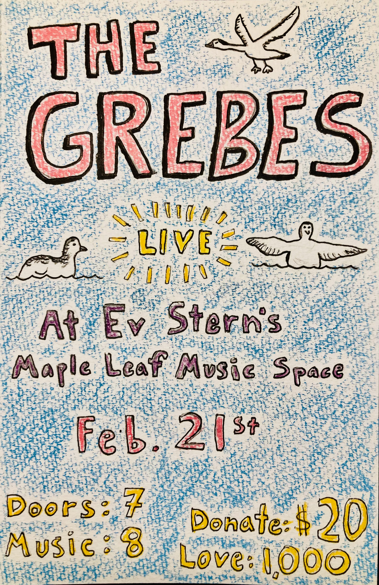
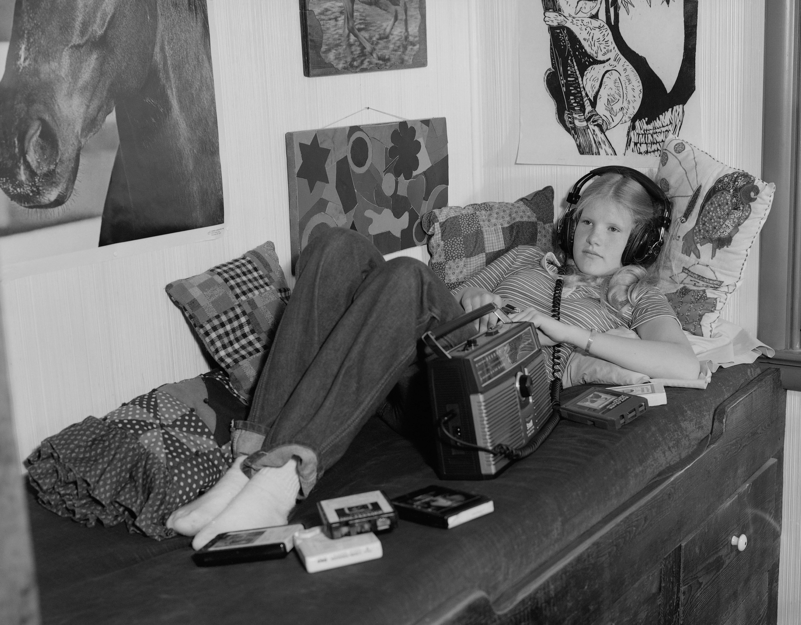
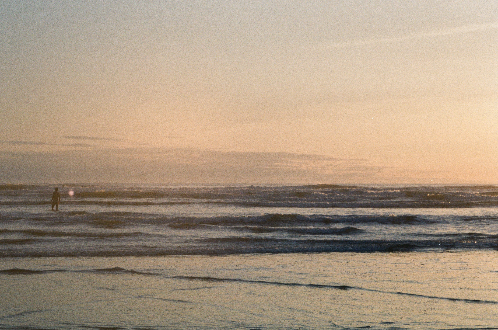
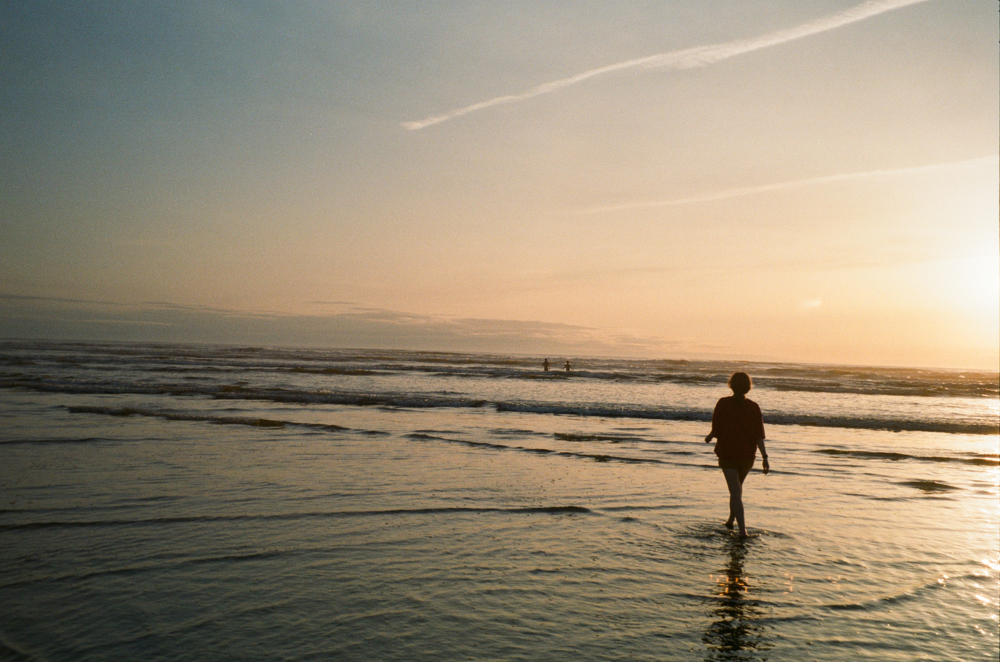
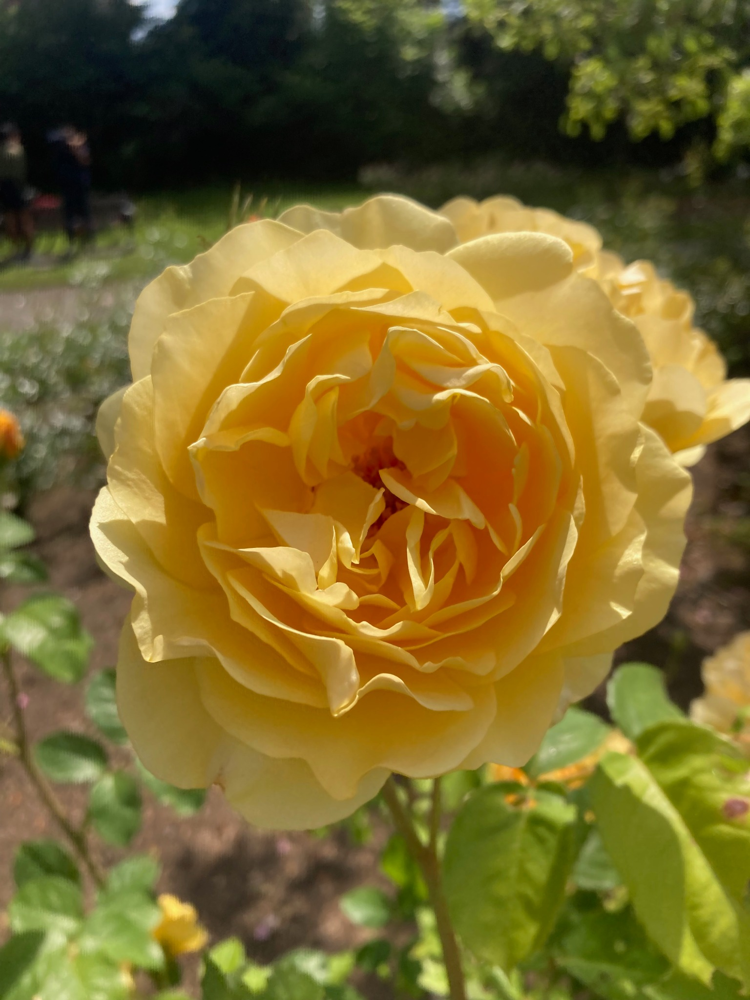
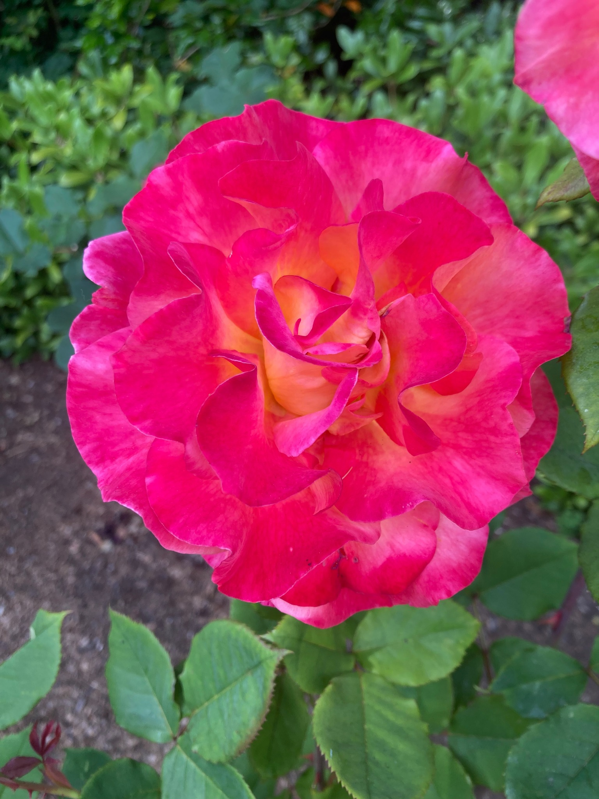
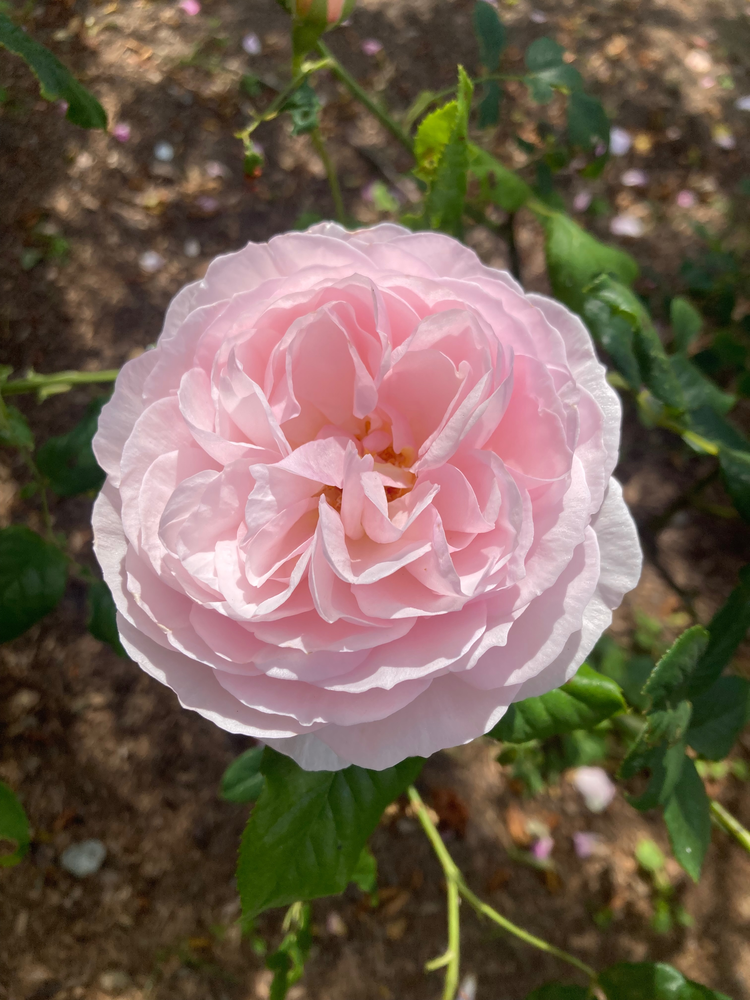
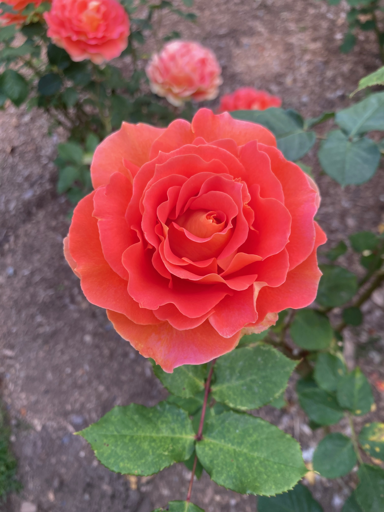

Upcoming House Show
My good friend Ev will be hosting The Grebes on Feb. 21 at his wonderful house up in Maple Leaf. I met Ev back when I lived in the neighborhood and used to walk past his colorful house with my dog and occasionally hear jazz music coming through his windows. At the time I was studying jazz piano because I figured it would be fun and rewarding, and I saw that Ev had a sign up outside his house that said “Jazz Workshops” along with his phone number. I gave him a call one day and I seem to recall making some sort of good impression on the phone because I liked old music and was also an English major. Ev told me he was having a jam at his house that weekend and told me to come on by, and soon enough I started attending his quarterly jazz workshops along with an eclectic crew of other students. Ev has been playing and teaching jazz for decades, and he leads his workshops right of his house, open to all ages and abilities. I had a blast playing jazz standards at his house, trying to keep up on piano, faking it on guitar, or singing in my best Chet Baker interpretation.
While I don’t have much to show for that time in terms of my prowess on the keyboard (due to my own lack of dedication and/or technical ability) I did learn a huge amount about playing with others, creating space, listening, taking chances, playing outside my comfort zone, and having fun doing it. Ev is a master at bringing music to everyone. In addition to his workshops he also hosts music and art events where the audience can paint and draw while listening to incredible, live jazz music. Ev has created a space where music is communal, fun, accessible, and joyful. He is a real inspiration and role model for me and I hope someday I can create a space like his where people can come together to sing songs and play wrong notes on guitars and pianos. If I do anything in my life like that I would be proud. If you’re in town, come out to Ev’s on February 21st and listen to some music with friends. Hope to see you there!

Posted on January 25, 2026
Thoughts On Streaming
Another year is coming to a close and another wave of Spotify Wrapped posts are being shared on social media. This year I’ve also been seeing a lot of posts from people urging others to get off Spotify and jump ship to another platform, primarily citing the CEO Daniel Ek’s investments in AI military drone technology. While I certainly share the sentiment that Spotify is evil and Daniel Ek is a horrible person, I also think we can also do more to extend the critique and the accompanying calls to action. We are all struggling to find ethical ways to exist under capitalism, to engage with the world and each other in meaningful ways that are on our own terms.
I think there is a widely felt sense that the way digital media is being sold to us, through attention grabbing feeds and streams is cheapening our relationship to art and to each other. It is becoming harder and harder to spend meaningful time with the art that we love, and to know how to best support the artists making it. We should be enraged by Daniel Ek’s morally bankrupt profiteering from musicians and fans, but simply getting off Spotify is not enough. All streaming platforms are based on the same model. I do not claim to be a perfect music fan, I know that my own relationship with digital media is full of contradictions and inconsistencies, but I do think about this topic a lot and I hope that some of my thoughts will be interesting to you. I will limit my critique here to three main points:
1. Streaming platforms devalue music.
2. Streaming weakens our relationship with music
3. Streaming algorithms are flattening taste and perpetuating boring music
To avoid bombarding you with too long of a read (and to give myself more time to write) I’ll post each of these points separately over the next few weeks. I should note that much of my critique here is informed by the book Mood Machine by Liz Pelly, which chronicles the history and impact of music streaming, from the end of the CD era in the early 2000s up until the present. I cannot recommend this book enough if you find any of this interesting.

1. Streaming devalues music.
Back in the day if you wanted to listen to an album, you paid $10 for it. If you couldn’t do that, you found a friend who had it and could share it with you. There was an inherent value in the music. $10 for every album. It didn’t matter if you listened to the album 5 times or a thousand times, there was still an acknowledgment that the album itself had value. An album can be very personally meaningful even if it is not highly streamable. As an example, I’ve only listened to Joanna Newsom’s Ys all the way through maybe 5 or 6 times. Still, it is one of the most beautiful albums I have ever heard. It is an absolute masterpiece. Joanna Newsom deserves my $10 for Ys even though I haven’t played it hundreds of times. In the streaming economy, my 7-8 streams per song wouldn’t even send her a penny.
With streaming, value is tied directly to streams, and streams are manipulated by algorithms and payola schemes. There is an economic incentive to create music that is highly listenable, less likely to be skipped, and fades easily into the background. Often made by ghost artists or even AI, this music rises to the top of the “Calm”, “Chill Coffee House”, or “Sleep” playlists and rakes in streams. As music listeners we need to think about where are money is going. What music do you think is valuable? Think of your favorite album from this past year. Do you think that artist deserves 10 dollars (the price of a beer) for making it and sharing it with you?
There are other, even more literal ways in which higher streams can be tied to devaluation. Artists are able to cut deals with Spotify to take lower royalty payouts in order to be boosted to bigger playlists by the algorithm. Indie labels are being forced into taking these deals for their artists’ music to stay relevent, cutting into their earnings for the sake of higher streams. It may feel like you are supporting the artists you like by streaming them, but in reality your Spotify subscription is going toward whichever artists are receiving the most streams, not necessarily the music you love the most or are even listening to at all. For a track to receive any payout from Spotify it needs to have 1,000 streams in the past year. How many Grebes songs have reached that threshold? 0. Lol! Even from an artist’s perspective, I have had to confront the depressing illusion that my music is only valuable to the extent that it is being streamed. (I promise I am not trying to guilt trip you into buying my music… I think this ethos should extend to artists you don’t know at all.)
When is the last time you spent $10 at a coffee shop? Or $30 going out to eat? $50 on a new pair of jeans? Our culture has accepted that it costs money to go out or to drink a latte. But with streaming, everyone expects that music should be essentially free. Like our social media feeds, music should be easily consumable, fed to us, and soon forgotten. Aside from Taylor Swift and the lucky few that rise to the top of a rigged system, musicians are struggling to make a living. Real humans putting in endless hours of labor into writing, performing, and recording music deserve to be compensated if you are getting something out of listening to it. Pre-capitalist societies understood that gifts are reciprocal. When you receive a gift you also need to give something back in order to keep the gift cycle alive. To sustain a healthy and vibrant musical culture we need to pay real artists whose music we love.
Posted on December 12, 2025
Jackson Pollock Music Video
Had a blast making this music video with my friend Mika, my partner Emma, and some wonderful friends recently. Follow the mishpas, trials and travails of our adventurer, Mika, as they try their best to enjoy a fun summer day in Seattle. Along the way, a mysterious wizard intervenes to help them out...
Posted on August 27, 2025
House Show August 22nd
I'll be playing a show with Johnny and John on Friday, August 22nd at the Shelby House (1208 E Shelby St)--A Grebes Trio for the first time ever! There is a new Grebes music video in the works.. and we're planning to premier it at the show as well! Emma (flowering ground) is going to be playing too, plus an artist visiting from L.A. named Albon. Should be really fun! Hope to see you there :)

Posted on August 12, 2025
Why make a website?
One of the conundrums of making art these days seems to be sharing it in a way that feels good. I suppose this has been a conundrum for some time now, but the issue feels especially pressing today. Instagram has become the go to platform for musicians and other artists to share their work, connect with other artists, promote shows, and so on. It is so ubiquitous that it feels like a requirement to be on there if one wants to have any kind of audience at all. My suspension though, is that much of this sense of "growing an audience" is illusory. Interactions on Instagram aren't very intentional. They aren't helping develop meaningful relationships to art and music. That isn't the fault of anyone using Instagram, but rather a design of the app itself. The only thing Instagram wants is for its users to be on the app as much as possible and to scroll through as many ads as possible while they are on it. Those aren't great conditions for thoughtfully spending time with someone's "content". This obviously goes way beyond just music or art. The way people consume news on social media is similarly accelerated and (imho) disconnected from reality.

All of that said, I have heard from various people that they enjoy following my updates on Instagram, and I think I have reached a fair number of people on there that wouldn't have listened to my music otherwise. Hence the conundrum... For myself I have found being on Instagram generally feels kind of shitty, and I end up having pretty mixed feelings whenever I post on there about my music. I am trying to work on feeling less attached to these platforms' metrics of success and value, but it can be hard. Not to mention Instagram is owned by Meta, controlled by one of the evil, demonic overlords of the world Mark Zuckerberg, and they track everything we do on there. Yeesh.
What to do about it?? I would love to live in a world where music and art was shared through community networks that weren't owned by mega-corporations intent on destroying our humanity. That is obviously a huge ask, but I think there are small things we can all do. Mostly it comes down to being intentional about the art and music we engage with. Don't succumb to the world of algorithms, find music independently, follow music blogs like Aquarium Drunkard or Gorilla vs. Bear, go to local shows and DIY spaces, listen to freeform radio stations like WFMU, share music with your friends like in the olden days, make your own playlists!
One of my own small acts was to make this website! I'll still be using email and Instagram from time to time, but I am curious to explore how it feels to share my music in a space that is my own, without ads or tracking, without the hypnotic pull of clicking to the next story or scrolling to the next reel. I'm planning to send out snippets from the website as a little "newsletter" of sorts. You'll be able to unsubscribe from that pretty easily I think.. So if you are tired of receiving my emails but have been too polite to say anything, you'll have your chance to unsubscribe anonymously soon.
With love,
Jamie

Posted on August 7, 2025
Welcome to The Grebes dot com!
Welcome to thegrebes.com, and thank you for finding your way here! I’ll be using this website to post music updates, info about shows, musings on the world, and pictures of things like flowers and my dog. Here are a few highlights from a recent trip to the Woodland Park Rose Garden:




Posted on August 5, 2025